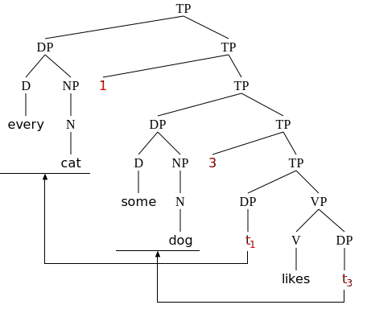
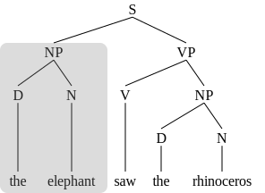

The svgling package
1 Package overview
The svgling package is a pure python package for rendering linguistics-style (constituent) trees in SVG, a vector format well-suited for web use. It accepts trees defined in terms of lists of lists (really, anything indexable) and strings, as well as nltk.Tree objects (or anything with the same API), and is fully integrated with rich display in Jupyter notebooks. This document gives a quick tour of how to use it and some main features; see the full manual for more.
The package has three main design principles, which together make it relatively unique:
- Be well suited for programmatic generation of tree diagrams via a high-level python api. This means that (a) many tweaks to tree layout are possible via compact and readable python code, and (b) the default settings with no customization should look decent to good on a very wide range of trees and tree styles across all browsers and SVG viewers.
- Be equally suited for theoretical linguistics and computational linguistics/NLP, at least for cases where the latter is targeting constituent trees. (This package is not aimed at dependency trees.)
- Do as much as possible with pure python (as opposed to python+javascript, or python+tk, or python+dot, or…).
The nltk interface is described below; the list interface is pretty straightforward from bracketing notation. (In what follows, “list” is used a generic term that covers any indexable structure, including python lists and tuples.) The first element of the list is the label of a parent node, and any subsequent members of the list are daughter nodes. A parent node without a daughter node is a leaf node (as are non-list strings).
1.1 Installation and logistics
Install from pypi via pip install svgling. On managed jupyter-based systems such as google colab, you can install by entering !pip install svgling into a notebook cell.
svgling can be installed from source via the github repository: https://github.com/rawlins/svgling. Please report bugs via the issue tracker on github if you encounter any!
Once it is installed, you can simply run:
import svglingIf you would like to reset tree drawing options to the default on import, you can call:
svgling.core.reset_defaults()1.2 Basic usage
For convenient use in Jupyter notebooks, the main function to try is svgling.draw_tree:
svgling.draw_tree(("S", "NP", "VP"))As a shortcut, the outer bracketing here can be omitted:
svgling.draw_tree("S", "NP", ("VP", "V"))Multi-line nodes are generally possible. Simply provide the node as a string that includes \n where a linebreak is desired. The next example, a more complex tree with multi-line leaf nodes, also shows how to get the leaf nodes to be lined up with each other. (This tree is from Carnie 2013, Syntax: a generative introduction (3rd ed.), p. 93.)
svgling.draw_tree("TP", ("NP", "D\nThe", ("AdjP", ("AdvP", "Adv\nvery"), "Adj\nsmall"), "N\nboy"), ("VP", "V\nkissed", ("NP", "D\nthe", "N\nplatypus")), leaf_nodes_align=True)1.3 More advanced tricks
The svgling package supports a wide range of complex formatting as well as “tree annotations” like movement arrows. The following example provides a quick illustration; see the full package manual for a complete list of possible formatting options.
This example illustrates a typical tree for Quantifier Raising in the Heim & Kratzer 1998 (“Semantics in Generative Grammar”) style, illustrating movement arrows and tree annotation from the svgling.figure module.
See the diagram gallery for an even more elaborate variant of this example.
t2 = ("TP", ("DP", ("D", "every"), ("NP", ("N", "cat"))),
("TP", "1", ("TP", ("DP", ("D", "some"), ("NP", ("N", "dog"))),
("TP", "3", ("TP", ("DP", svgling.core.subscript_node("t", "1")),
("VP", ("V", "likes"), ("DP", svgling.core.subscript_node("t", "3"))))))))
svgling.core.reset_defaults() # reset any defaults in case this is run out of order
f = svgling.core.cssfont("verdana, arial, sans-serif", style="oblique")
(svgling.draw_tree(t2, leaf_padding=3) # use a slightly wider padding than the default
# mark binders and traces in red
.set_node_style((1,0), text_color="red")
.set_node_style((1,1,1,0), text_color="red")
.set_node_style((1,1,1,1,0,0), text_color="red")
.set_node_style((1,1,1,1,1,1,0), text_color="red")
# set leaf nodes in bold sans-serif
.set_leaf_style(font_style=f)
# draw movement arrows and underline moved constituents
.movement_arrow((1,1,1,1,0), (0,))
.underline_constituent((0,))
.movement_arrow((1,1,1,1,1,1), (1,1,0))
.underline_constituent((1,1,0)))
2 Integration with other packages
svgling is designed to be used with Jupyter out of the box, and any Jupyter frontend or rendering engine that supports rich display objects and SVG (Jupyter Lab, Jupyter nbconvert, quarto+html, VSCode, Colab, etc) should be able to handle any of the core diagram features. In fact, this website is generated entirely via Jupyter+quarto. Please report incompatibilities!
2.1 Integration with NLTK
The svgling package is well-integrated with the nltk (https://www.nltk.org/) package. This package uses svgling for rendering of nltk.tree.Tree objects in Jupyter by default (using it to implement a _repr_svg_(), and svgling supports nltk.tree.Tree objects in any context where a tree can be provided.
import nltk
t3 = nltk.Tree.fromstring("(S (NP (D the) (N elephant)) (VP (V saw) (NP (D the) (N rhinoceros))))")
t3
Options available as named parameters can also be set on a global basis by modifying the options object at svgling.core.default_options, and this provides a quick way to change settings for nltk trees. For example, to change font size for all rendered trees:
svgling.core.default_options.font_size = 20Global defaults can be reset via svgling.core.reset_defaults().
For more complex styling of nltk trees, including tree annotations, you can directly supply a nltk.tree.Tree object to svgling.draw_tree:
svgling.draw_tree(t3, leaf_nodes_align=True).box_constituent((0,))
Other parts of svgling support Trees as well, in particular, the svgling.figure utility classes.
2.2 Exporting to raster formats
The svgling packages supports exporting to raster formats via cairosvg. Convenience wrappers are provided via svgling.util, and the full cairosvg api can be used as well. See the manual for more details, but here is an example of one of t3 as a png:
import cairosvg # this cell needs cairosvg in order to run
import svgling.utils, svgling.semantics
from IPython.display import Image
t = svgling.semantics.DoubleBrackets(t3)
Image(svgling.utils.svg2png(t, scale=1.5))
3 Future directions for svgling
For core syntactic tree-drawing goals, svgling is relatively feature complete. However, there are many possible future additions, and SVG is an extremely powerful and flexible drawing tool. If you have specific requests, let me know, either via the issue tracker or via email.
Here are some possible future additions, to give a sample. Pull requests are welcome!
- labels along edges
- api for more fine-grained manual spacing adjustment
- support for linguistic diagrams from phonology and morphology. (There is already some limited support for semantics-related diagrams.)
- (harder) more automatic resizing of trees via Javascript
- (harder) put MathJax/katex output in SVG nodes, perhaps using SVG
foreignObject. (Right now, there is support for trees with latex content via thesvgling.htmlpackage.) - (very hard) allow interactive positioning of nodes or trees via javascript.
- (doable but a lot of work) dependency parsing graphs